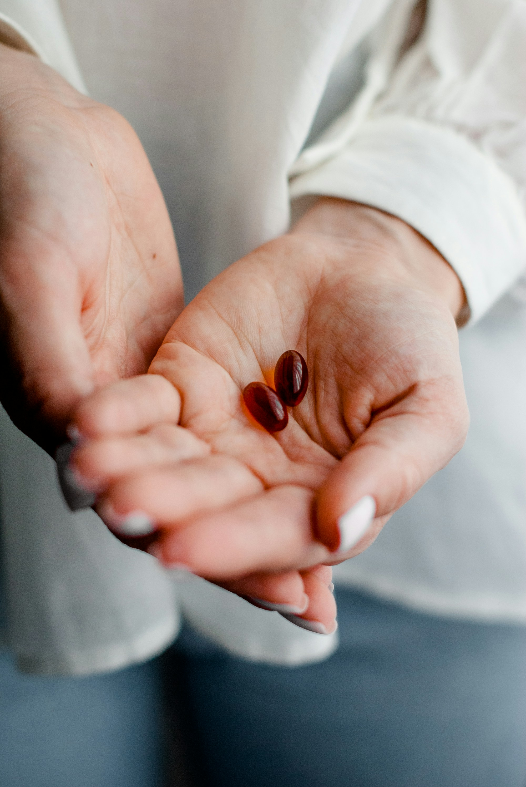

El momento y la forma cambian cómo se absorben y cómo te caen.
Tomá
Cuándo
Lo importante es saber para qué sirve, cómo usarlo y si realmente lo necesitás.
¿Tenés dudas con el tuyo?
Escribinos por mensaje directo a @Bulk_Ar y te ayudamos.